My experiences of HTML and CSS throughout the term!
This term was the first time I ever did any form of coding, even though I’ve always had an interest in it. At the beginning it was very difficult to get in to, what code to use, what the code is used for or when to use it. However, over time I just continued to try and improve my code and learn about how I can improve the designs of my website to my liking.
Ups and Downs of my coding experience:
The most issues I had when creating this website at first was to figure out how to properly design and write the code for the Hamburger icon. It took me quite a while but after changing around the numbers for the “top” property it finally worked.
Then, I had to make it so the Hamburger icon opens up a navigation on the mobile website when pressed which also gave me a lot of issues, but in the end I did manage to write the code for that as well.
This is exactly what I enjoy about coding, solving my own problems to then get a results which I am happy with feels amazing.
Most other parts I thought were quite straightforward, I didn't really come across many issues that stopped me from achieving my goal.
Design considerations:
I chose these particular colours by mixing two palettes from a website called colourlovers.com together, as well as adding some colours of my own which I thought were suitable. I like very simple and darker colours which is why my header, nav bar and footer are dark colours.
I decided to use a bit of a lighter colour on the main part of the website to mix it up a little bit and make it look more appealing. For my index site I decided to also add a background image about the video game character Mario, because I like him and his games and it also works nicely because of my name.
I used a grid layout for my sites because it makes it easy to organise where parts of the websites go, while also looking nice as well.
Validation:
Index page HTML and CSS validation: 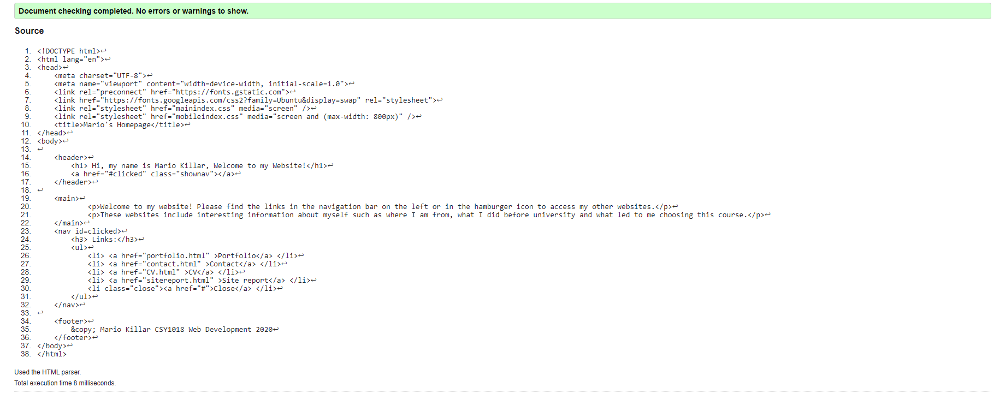 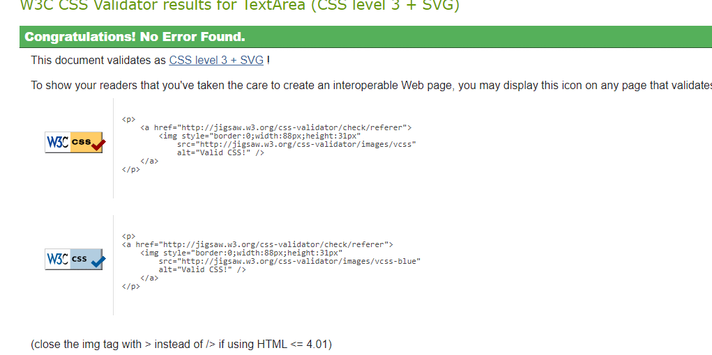 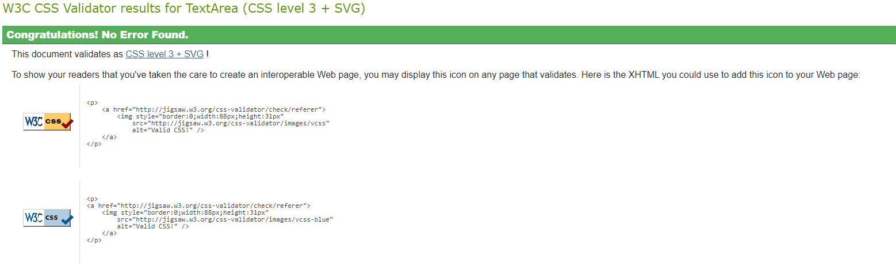
Links: HTML Main CSS Mobile CSS
Portfolio page HTML and CSS validation: 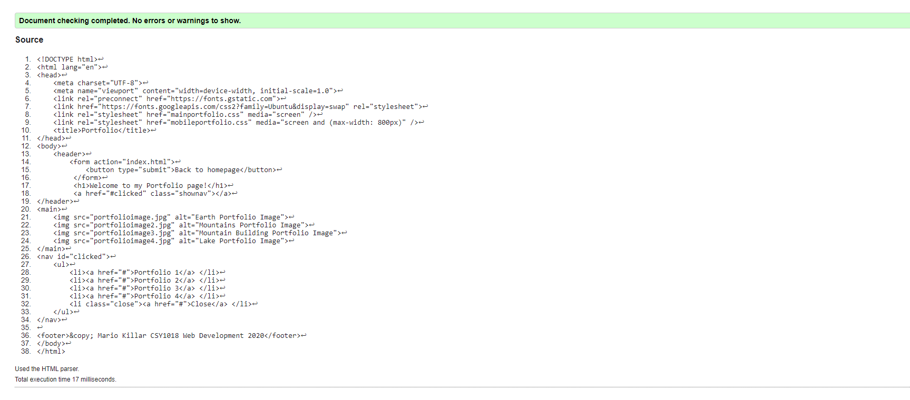 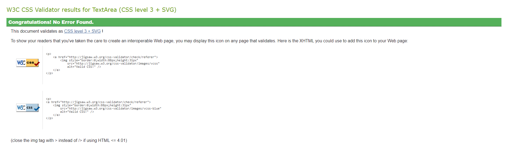 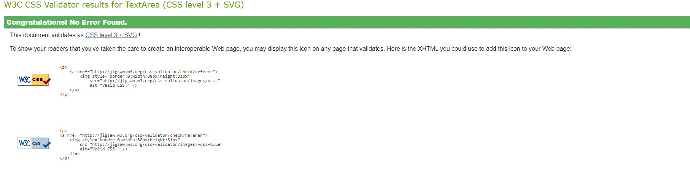
Links: HTML Main CSS Mobile CSS
Contact page HTML and CSS validation: 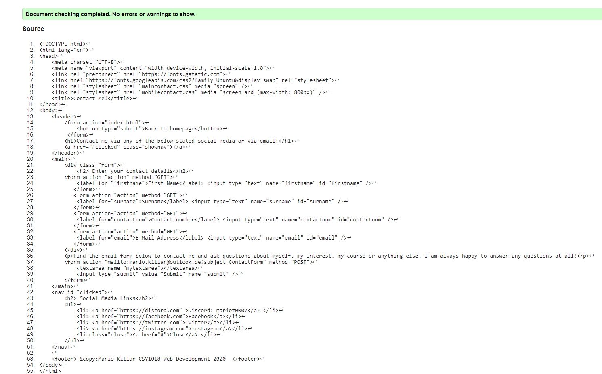 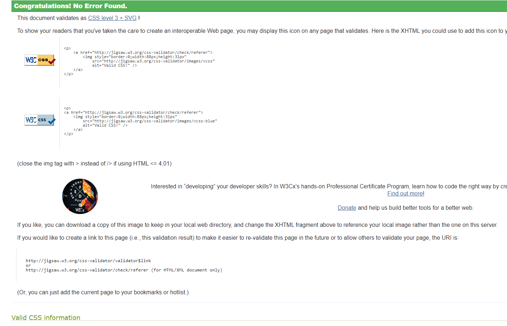 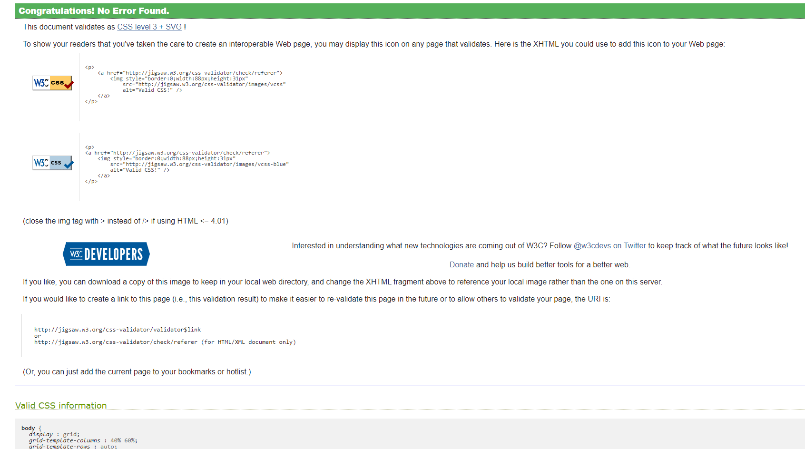
Links: HTML Main CSS Mobile CSS
CV page HTML and CSS validation: 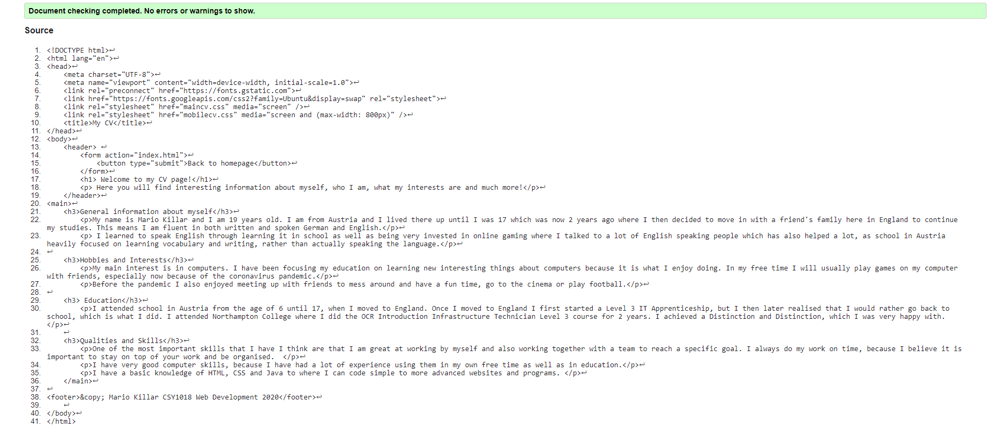 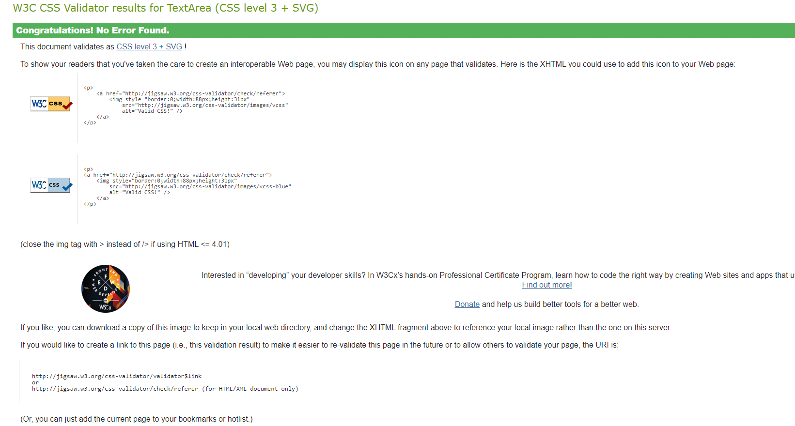
Site report page HTML and CSS validation: 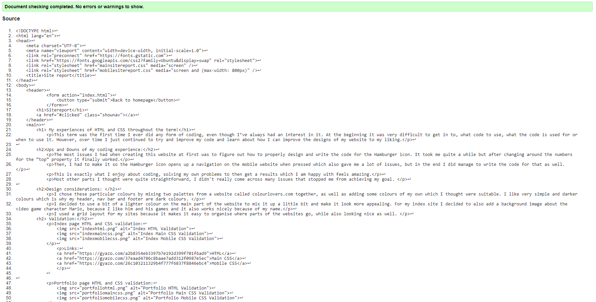 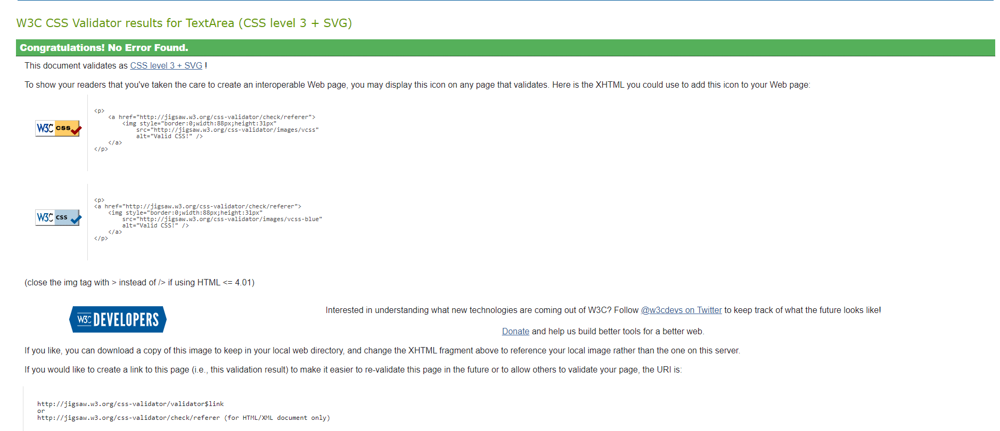 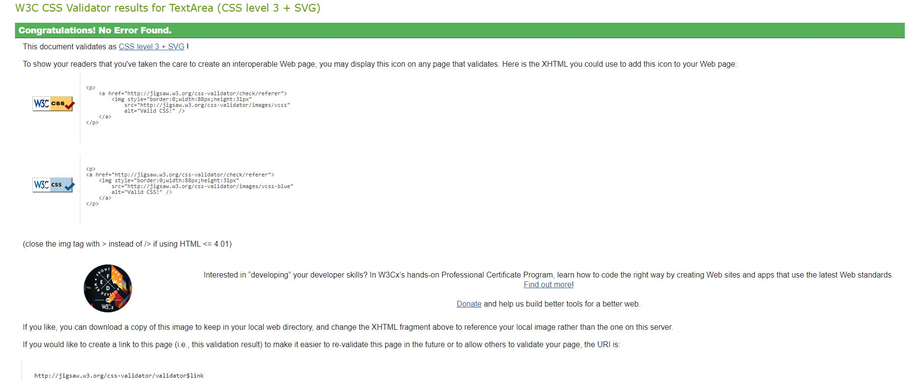 HTML Main CSS Mobile CSS